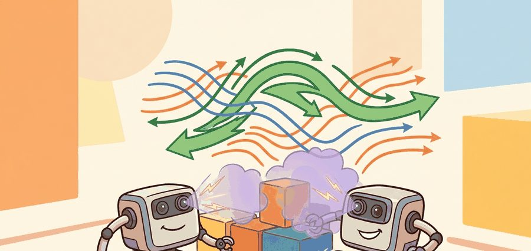
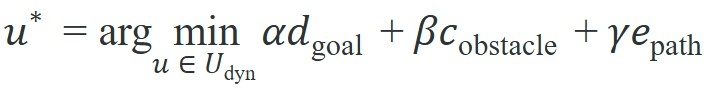

Obstacle avoidance is not a path drawing problem; it is a timed command-selection problem.
A Local Planner With Commitment Issues

Figure 30.4.1 sketches this loop end to end: sensor measurements build a local costmap, the planner scores candidate commands against it, and the winning command leaves a trace a reviewer can later replay.
This section assumes familiarity with global path representations and costmaps from section 30.1, and with the kinodynamic constraints introduced in section 30.3. The velocity-space reasoning developed here carries directly into section 30.5, where learned navigation policies replace hand-tuned cost weights with data-driven scoring. The same local feasibility constraints recur in Part VII alongside whole-body motion planning, where joint limits replace velocity windows.
A delivery robot is 0.3 seconds from a doorway when a person steps into the corridor. The global map is useless: it was built yesterday and knows nothing about this body, right now. The robot must pick a velocity command in the next 50 ms or it will collide. That is the problem local planners exist to solve, and it is exactly the problem that separates autonomous robots from remote-controlled ones. In this section you will see how the Dynamic Window Approach turns kinodynamic constraints into a tractable velocity search, why potential fields fail in tight spaces, and how deployed systems like Nav2 combine both ideas with costmap scoring to keep robots moving safely at real-world speeds.
Concretely: that 0.3 second budget is several DWA control cycles at Nav2's default 20 Hz (50 ms each), which is exactly why the worked example later in this section samples and scores candidate velocities on a 0.2 s timestep rather than trying to re-plan a whole path in the moment the person steps out.
Picture a robot rolling toward a doorway at 0.5 m/s when the global map, drawn yesterday, still insists the path is clear: in the next 50 ms it has to commit to one velocity command, and no redrawing of the route can save it from a wall that the map never knew about. A global path (the coarse route from start to goal computed over a static map) is too coarse for the next second of motion, and the local costmap (a short-range grid of obstacle cost values built fresh from the robot's current sensor data, distinct from the static global map) is what the planner actually scores commands against. The robot still has to choose velocities that avoid nearby obstacles, respect acceleration limits, and remain trackable by its controller.
The Dynamic Window Approach (Fox, Burgard, and Thrun's 1997 method, now shipped as the Nav2 DWB controller) samples feasible velocity commands and scores their short rollouts on a differential-drive base like a TurtleBot3. Potential fields, the steering law Khatib introduced for manipulator obstacle avoidance at Stanford in 1986, define attractive and repulsive forces but stall in the symmetric local minima of a doorway. Deployed stacks like ROS 2 Nav2 and Boston Dynamics Spot's autowalk combine costmap scoring, trajectory rollout, and controller constraints rather than relying on either method alone.
A local planner is good when its rejected commands are as explainable as its chosen command.
A velocity that cannot be executed safely in the next 50 ms is not a plan; it is a wish.
Most navigation methods can be read as constrained search or optimization:

The objective is short-horizon progress; constraints are collision clearance, velocity, acceleration, curvature, obstacle prediction, and emergency stop authority.
Why this formulation matters physically. A real robot cannot pause mid-motion to replan; every 50 ms it commits to a command its actuators can execute. Encoding safety as a hard constraint, not a soft penalty, guarantees that no tradeoff of speed or path alignment can override collision avoidance. Hardware demands this: a collision, unlike a suboptimal path, is irreversible.
How the weights interact. The three scalars $\alpha$, $\beta$, $\gamma$ are tuned relative to each other, not in isolation. Raising $\beta$ (obstacle cost) causes the planner to accept larger path deviations to preserve clearance; raising $\alpha$ (goal distance) pulls trajectories tighter to the global route at the cost of narrower safety margins. In practice, $\beta$ is set first to guarantee a minimum clearance budget, then $\alpha$ and $\gamma$ are swept together to balance goal-seeking against path tracking.
Before reading on, guess: if you double $\beta$ relative to $\alpha$, does the robot become faster at reaching its goal, slower but safer, or does it stall in doorways?
With the cost function and its weights now fixed, the remaining question is which commands the planner is even allowed to score, and that is exactly where the Dynamic Window Approach and potential fields diverge.
In the Dynamic Window Approach, the planner constrains the search to velocity pairs $(v, \omega)$ reachable within one timestep given the robot's current speed and its acceleration limits. Such constraints are called kinodynamic: they combine kinematic limits (geometry and reachable configurations) with dynamic limits (the velocities and accelerations the actuators can physically produce). Take a robot moving at $v = 0.5$ m/s with a deceleration limit of $0.5$ m/s$^2$ and a 0.2 s timestep. The dynamic window restricts candidate linear speeds to $[0.4, 0.6]$ m/s. The planner simulates each candidate pair forward for a short horizon (typically 2 to 3 s, sometimes called a rollout: a short forward simulation of what would happen if a candidate command were applied) and scores it on heading alignment, obstacle clearance, and speed. That kinodynamic window typically eliminates over 90% of the velocity grid before scoring begins. The same robot can reach only about 11 out of a 100-point grid in one timestep, so the planner's real search is far smaller than it appears on paper.
So far: the dynamic window narrows the full velocity grid down to only the commands reachable in one timestep given current speed and acceleration limits (the kinodynamic constraint), each surviving candidate is checked by forward-simulating it over a short horizon (a rollout), and in practice this pruning throws out the large majority of the grid before any scoring happens.
The Nav2 DWB controller (the Nav2-specific reimplementation of DWA with pluggable critics) runs this loop at 20 Hz (the default controller frequency as of Nav2 Humble, 2022) on a TurtleBot, selecting whichever admissible $(v, \omega)$ pair minimizes the weighted cost. Figure 30.4.2 shows this pruning step directly: the small blue box marks the dynamic window inside the full velocity grid, with green dots for commands that survive collision checking and red for those that do not.
Potential fields take a different approach. The goal exerts an attractive force proportional to distance, and each obstacle exerts a repulsive force that falls off with the square of clearance. The robot then follows the gradient of the combined field. The method is fast and memoryless, but a narrow corridor breaks it. When two repulsive walls sit symmetrically, their forces cancel and the robot stalls. This is the symmetric-repulsion deadlock. In a 0.8 m corridor with walls at equal distance, a pure potential-field robot stalls 100% of the time. DWA's velocity sampling escapes the same corridor in under 0.5 s, because it treats the passage as a feasibility constraint rather than a force balance. This local minimum problem is the central reason potential fields are rarely used alone in deployed systems.
Think of a potential field like a ball resting in a shallow bowl that has two equal bumps on opposite sides. Gravity (the goal's attraction) pulls the ball straight down, but the two bumps push back with exactly the same force from left and right, so the ball just sits there, perfectly stuck at the bottom even though there is a clear path past either bump. A potential field robot caught between two symmetric walls is in precisely that situation: the math is balanced, so the robot freezes, not because the corridor is impassable but because equal forces leave it with nothing to choose between. DWA escapes the same situation by asking "which velocity gets me through?" rather than "which way does the force point?"
A common misconception is that potential fields compute a planned geometric path that the robot then follows, much like A* or RRT. That is not what they do. A potential field produces only an instantaneous gradient vector at the robot's current position. It stores no representation of any future path or global structure. In embodied AI, a purely reactive gradient follower has no memory of where it came from and no model of where the field will lead. When two repulsive walls produce equal and opposite forces, the robot stalls indefinitely. The path is not blocked; the local gradient is simply zero. Potential fields are a reactive steering law, not a planner. Any system that needs to escape local minima or reason about corridor geometry must combine them with a global planner or a sampling-based method such as DWA.
When tuning DWA cost weights in Nav2 DWB, avoid restarting the controller node for each trial. The three scoring parameters PathDistBias, GoalDistBias, and ObstacleCostScale are live ROS 2 parameters: run ros2 param set /controller_server PathDistBias 32.0 and the next control cycle picks up the new value immediately. Start by fixing ObstacleCostScale high enough to guarantee clearance, then sweep PathDistBias versus GoalDistBias to balance tracking versus goal-seeking. Logging the per-candidate scores at debug level reveals which weight term is dominating and guides the next adjustment without guesswork.
Trace one control cycle for a TurtleBot moving at $v = 0.5$ m/s with a deceleration limit of $0.5$ m/s$^2$ and a 0.2 s timestep. The dynamic window restricts linear speed to $[0.5 - 0.5 \times 0.2,\ 0.5 + 0.5 \times 0.2] = [0.4, 0.6]$ m/s. Sample three candidates and score each with cost $= \alpha\,d_{\mathrm{goal}} + \beta/\text{clearance} - \delta v$ using $\alpha = 1.0$, $\beta = 1.5$, $\delta = 0.3$. Candidate A: $v = 0.6$, $d_{\mathrm{goal}} = 2.0$, clearance $= 0.20$ m gives $2.0 + 1.5/0.20 - 0.3 \times 0.6 = 2.0 + 7.5 - 0.18 = 9.32$. Candidate B: $v = 0.5$, $d_{\mathrm{goal}} = 2.2$, clearance $= 0.40$ m gives $2.2 + 3.75 - 0.15 = 5.80$. Candidate C: $v = 0.4$, $d_{\mathrm{goal}} = 2.4$, clearance $= 0.55$ m gives $2.4 + 2.727 - 0.12 = 5.01$. The planner selects Candidate C (lowest cost, 5.01): the $1.5/\text{clearance}$ term punishes the fast 0.20 m clearance of A so heavily (7.5) that no amount of goal progress can rescue it. The robot trades 33% of its speed to nearly triple its safety margin.
Code Fragment 1 isolates local-planner scoring: candidate command, obstacle clearance, progress term, and dynamic feasibility. The point is to make command rejection inspectable.
# Score three local velocity commands.
# The selected command balances goal progress and obstacle clearance.
candidates = [
{"v": 0.6, "goal": 2.0, "clearance": 0.20},
{"v": 0.4, "goal": 2.4, "clearance": 0.55},
{"v": 0.2, "goal": 3.0, "clearance": 0.80},
]
scores = []
for c in candidates:
score = c["goal"] + 1.5 / c["clearance"] - 0.3 * c["v"]
scores.append((round(score, 2), c["v"]))
print(scores)
print(f"command_v={min(scores)[1]}")Expected output interpretation. The smallest score belongs to the slowest command because clearance dominates goal progress in this local decision. That is the intended interpretation of the output: when hazards are near, the local planner should sacrifice speed first, rather than preserving nominal throughput at the cost of safety margin.
That same clearance-first scoring, small enough to inspect in a dozen lines here, is precisely the logic that production navigation stacks scale up to thousands of robots on a live floor.
Amazon Robotics drive units (the descendants of the Kiva Systems robots) navigate dense warehouse floors using local collision avoidance layered on a global route grid, choosing velocity commands that keep clearance from neighboring pods and human pickers in real time. The same DWA-style "score reachable commands against a local costmap" logic also runs in ROS 2 Nav2's DWB controller deployed on Clearpath and TurtleBot research platforms worldwide.
Nav2 controller plugins, MPPI (Model Predictive Path Integral) controllers, Regulated Pure Pursuit, and DWB controllers package local rollout and tracking behavior. The maintained path handles costmap integration, velocity limits, plugin loading, and behavior-tree coordination.
Keep the small DWA or potential-field fragment as a test for cost terms and constraints. Use Nav2 controllers and behavior trees (the modular, tree-structured control logic that sequences navigation tasks like planning, recovery, and retry without a monolithic state machine) when deploying on a full robot.
Replay moving obstacles, stale costmaps, delayed transforms, actuator saturation, and local minima. Local planning should fail loudly before it commands unsafe motion.
Stale costmap data is the most common silent failure: if the transform between the sensor frame and the map frame lags by more than one control cycle, the inflated obstacle region (the costmap's padded zone around each obstacle, expanded by roughly the robot's radius plus a safety margin so the planner treats getting that close as a collision) shifts behind the robot and the planner sees clear space where a wall exists. The symptom is confident forward motion followed by a sudden collision that replays show was always predictable. Fix by publishing a transform watchdog that halts the local planner when transform latency exceeds half the costmap update period.
Log local costmap, candidate velocities, selected command, obstacle distances, tracking error, and recovery state. Those fields separate a bad local planner from bad perception or global routing.
Freeze controller frequency, velocity limits, acceleration limits, cost weights, obstacle horizon, inflation, and safety stop rules before comparing local planners.
Three directions are actively reshaping local planning as of 2024 to 2026. First, learned diffusion-based trajectory generation is replacing hand-sampled velocity grids: Carvalho et al. (2024, "Motion Planning Diffusion: Learning and Planning of Robot Motions with Diffusion Models," ICRA 2024) show that a denoising diffusion model conditioned on the local costmap and robot state can generate a batch of diverse, collision-aware trajectories in a single forward pass, and report that it typically outperforms DWA on the cluttered indoor benchmarks they test without manual weight tuning. Second, language-conditioned local planners are emerging from work at MIT CSAIL and Carnegie Mellon (e.g., the LNAV line of work, 2024 to 2025) where a vision-language model reweights the DWA cost terms in real time based on natural-language instructions such as "give pedestrians extra space" or "hug the right wall," letting operators adjust social behavior without recompiling controllers. Third, risk-aware MPPI variants that propagate uncertainty from a learned terrain model into the trajectory cost (Agha-mohammadi group at NASA JPL, 2024) allow planetary rovers and outdoor wheeled robots to reason about wheel-slip probability explicitly in the velocity window, reportedly reducing stuck events on loose soil by over 30% compared to deterministic MPPI in the reported test conditions. Open problem for a PhD student: current diffusion planners and risk-aware MPPI methods are each evaluated on separate benchmarks with incompatible metrics; designing a unified evaluation protocol that jointly measures trajectory diversity, worst-case clearance under uncertainty, and real-time feasibility on embedded hardware is an open and practically consequential research gap.
Obstacle avoidance is not a path drawing problem; it is a timed command-selection problem.
Can you state the search space, cost function, constraints, replanning trigger, controller interface, and failure metric for local planning and obstacle avoidance? If not, the planner is not specified enough to deploy.
Local planning and obstacle avoidance is ready for embodied use when route quality, dynamic feasibility, local control, and recovery behavior are measured in the same replay.
Run the panel with pedestrian crossing, sudden obstacle, and narrow doorway. Report minimum clearance, command oscillation, controller saturation, stop distance, and recovery trigger.
Beginner (weekend): Implement a DWA scorer in pure Python using Gymnasium's PointMaze environment: sample a 5x5 velocity grid each step, score candidates with the three-term cost function from this section, and log which term eliminates the most candidates per episode. The key challenge is choosing weight values that prevent oscillation near walls without stalling goal progress. Intermediate (1 to 2 weeks): Deploy Nav2's DWB controller on a TurtleBot3 in Gazebo with ROS2, replace the default inflation layer with a custom costmap plugin that inflates dynamic obstacles detected by a depth camera at twice the radius of static ones, and compare minimum clearance and path length against the stock plugin across ten replays of a pedestrian crossing scenario. The key challenge is keeping the costmap update rate fast enough that the planner sees the inflated region before the robot enters it.
Goal: Reproduce the symmetric-repulsion deadlock empirically and confirm that velocity-space sampling escapes it. Tools needed: Python 3, NumPy, and Matplotlib (no robot hardware required); roughly 20 minutes. Setup: Build a 2D grid world with a goal at the far end of a straight corridor whose two walls are obstacles. Implement a potential-field controller (attractive force toward the goal proportional to distance, repulsive force from each wall falling off as $1/\text{clearance}^2$) and step a point robot along the combined gradient. What to vary: the corridor width (start at 0.8 m with the robot centered, then widen it and offset the start point off-center); the repulsive gain; and a small random perturbation added to the start position. What to observe: with symmetric walls and a centered start the gradient magnitude collapses to near zero and the robot freezes short of the goal; nudging the start off-center or adding perturbation lets it slip through, showing the deadlock is a knife-edge, not a wall. Then replace the controller with a tiny DWA loop (sample a 5x5 grid of $(v, \omega)$, roll each forward 1 s, reject collisions, pick the lowest-cost survivor) and confirm it clears the same 0.8 m corridor in under 0.5 s of simulated time. Plot trajectory and per-step gradient magnitude for both controllers side by side.
Continue to Section 30.5: Learned navigation policies, where this planning contract connects to the next embodied capability.
LaValle, S. M. "Planning Algorithms." Cambridge University Press, 2006. http://lavalle.pl/planning/
Open textbook reference for graph search, sampling-based planning, configuration spaces, and kinodynamic planning.
OMPL Project. "Open Motion Planning Library." Official documentation. https://ompl.kavrakilab.org/
Primary tool reference for sampling-based planners such as RRT, RRTstar, PRM, and kinodynamic variants.
ROS 2 Navigation Project. "Nav2 documentation." Official documentation. https://navigation.ros.org/
Primary documentation for global planners, controllers, costmaps, behavior trees, and recovery behaviors.